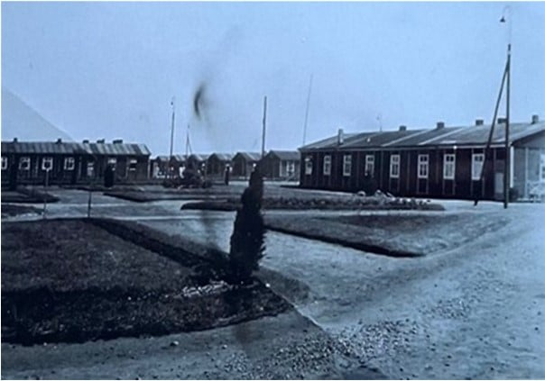
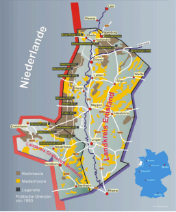
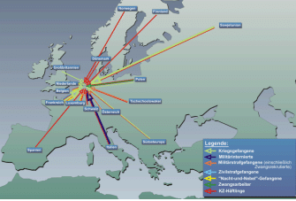
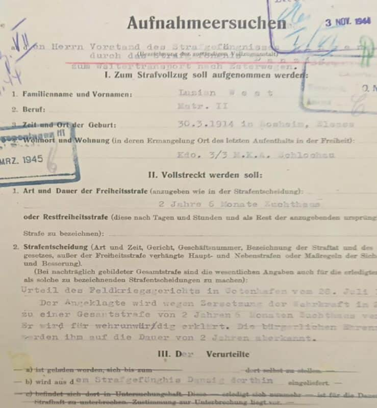
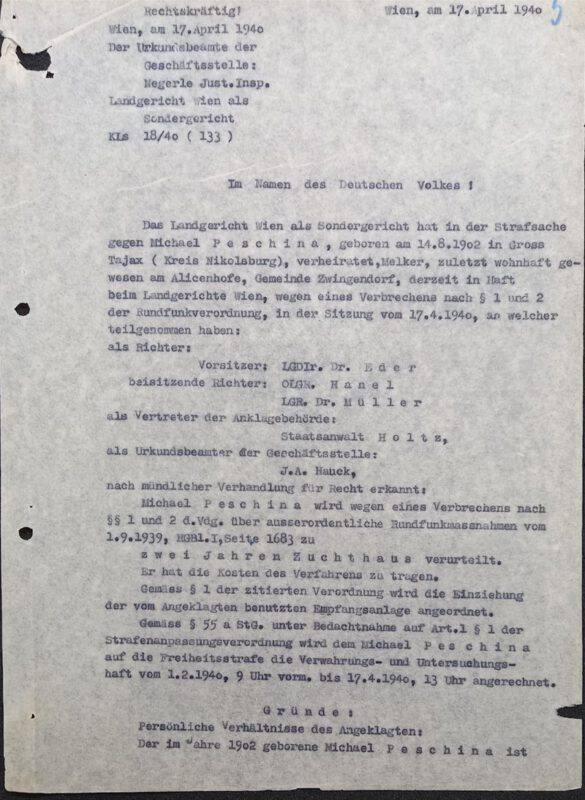
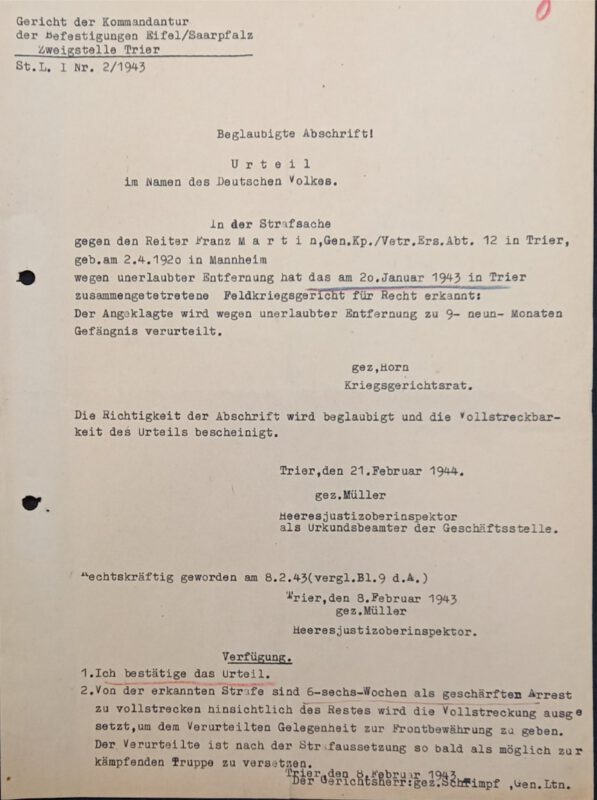
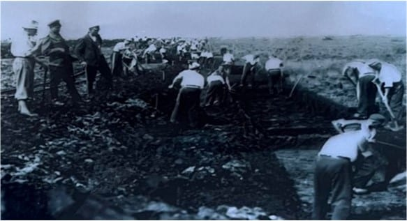
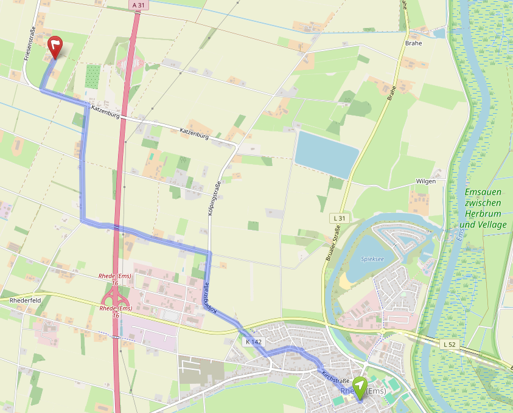

Du betrittst ein digitales Archivzimmer. Darin liegen Fragmente: Aktenauszüge, Biografiestücke, historische Informationen, Reflexionsfragen. Deine Aufgabe lautet: Rekonstruiere eine Lebensgeschichte. Finde heraus, was die Quellen zeigen, was offenbleibt und woran erinnert werden muss.
1 · Der Ort
2 · Das System
3 · Eine Biografie
4 · Arbeit & Alltag
5 · Erinnerung heute
Dauer: ca. 60–75 Minuten. Deine Eingaben werden im Browser gespeichert und können am Ende ausgedruckt werden.
Wichtig für das Einführungsgespräch: Das Ausfüllen der Biografie-Karte ist das Herzstück dieser Lerneinheit und braucht ausreichend Zeit.
In der Gemeinde Rhede im Emsland, unweit der niederländischen Grenze, befand sich zwischen 1933 und 1945 das Strafgefangenenlager III Brual-Rhede. Es war eines von insgesamt fünfzehn Lagern, die das NS-Regime im Emsland errichtete – auf damals weitgehend unbewohntem Moorgebiet, fernab von Städten, schwer einsehbar.
Das Lager wurde 1933 zunächst als Konzentrationslager für bis zu 1.000 Häftlinge geplant. Ab Mai 1934 übernahm die Reichsjustizverwaltung die Kontrolle und nutzte es als Strafgefangenenlager. Die ersten Bewacher waren SA-Einheiten – später übernahmen Justizbeamte. Die Häftlinge kamen nicht mehr nur wegen ihrer politischer Überzeugung ins Lager: Es waren auch verurteilte Strafgefangene – Männer, die gegen NS-Gesetze verstoßen hatten, oft wegen Vergehen, die in einem anderen politischen System keine Straftaten gewesen wären.
Das Lager befand sich auf dem Gebiet der Gemeinde Rhede, nahe dem Ort Brual. Heute erinnert ein Gedenkort an diesem Platz an die Geschichte des Lagers und die Menschen, die dort inhaftiert waren. Der Erinnerungsort wurde durch die Initiative von Albert Vinke, mit Unterstützung der Gedenkstätte Esterwegen, der Gemeinde Rhede und des Landkreises Emsland neu gestaltet.
Lager III Brual-Rhede war kein Einzelfall. Es war Teil eines Systems aus fünfzehn Lagern, die das NS-Regime zwischen 1933 und 1945 im dünn besiedelten Emsland errichtete. Die Abgeschiedenheit war kein Zufall: Das Moor schuf natürliche Isolation. Die Häftlinge sollten „Kulturarbeit" leisten – Entwässerung und Urbarmachung eines Landstrichs, der bis dahin kaum bewohnt war.
Die Lager veränderten sich über die Zeit: ihre Funktion, ihre Bewohner, ihre Verwaltung. Heute steht in Esterwegen eine Gedenkstätte, die an alle fünfzehn Lager erinnert.


Esterwegen · Börgermoor · Neusustrum · Brual-Rhede · Walchum · Oberlangen · Versen · Groß Hesepe · Bathorn · Fullen · Wietmarschen · Alexisdorf · Aschendorfermoor · Dalum · Wesuwe — alle im heutigen Landkreis Emsland, Niedersachsen.
In diesem Raum wählst du eine Person aus, deren Akte im Niedersächsischen Landesarchiv Osnabrück erhalten ist. Die Texte wurden von Schülerinnen und Schülern der Ludgerusschule Rhede auf Grundlage der Originalakten erarbeitet. Du liest die Biografie in Abschnitten – und füllst gleichzeitig eine Biografie-Karte aus.
Text erarbeitet von Schülerinnen und Schülern der Ludgerusschule Rhede auf Grundlage der Originalakte. Quelle: Nds. Landesarchiv Osnabrück, Rep. 947 LIN II, Akz. 2009/007 Nr.289. Bereitgestellt von der Gedenkstätte Esterwegen (Dr. Weitkamp).

Text erarbeitet von Schülerinnen und Schülern der Ludgerusschule Rhede auf Grundlage der Originalakte. Der Text ist in der Ich-Perspektive gehalten und beruht vollständig auf der Gefangenenakte. Quelle: Nds. Landesarchiv Osnabrück, Rep. 947 Lin. II, Akz. 2009/007 Nr.583. Bereitgestellt von der Gedenkstätte Esterwegen (Dr. Weitkamp).

Text erarbeitet von Schülerinnen und Schülern der Ludgerusschule Rhede auf Grundlage der Originalakte. Der Text ist in der Ich-Perspektive gehalten und beruht auf der Strafakte. Quelle: Nds. Landesarchiv Osnabrück, Rep. 947 Lin II, Akz. 2009/007 Nr.148. Bereitgestellt von der Gedenkstätte Esterwegen (Dr. Weitkamp).

Das Emsland war kein Ort, den man zufällig wählte. Das Moor schuf Isolation – und bot gleichzeitig Arbeit, die das Regime als „Nutzen" für Deutschland darstellte: Entwässerung, Torfabbau, Straßenbau. Die Häftlinge schufen diese Infrastruktur mit ihren Händen.

Je nach Jahreszeit mussten die Gefangenen acht bis zwölf Stunden täglich Zwangsarbeit leisten. Tätigkeiten umfassten Torfabbau, Entwässerungsarbeiten, Straßen- und Wegebau sowie den Ausbau des Brualer Schlootes (eines Entwässerungskanals). Die Verpflegung war schlecht, die medizinische Versorgung unzureichend – und auf Arbeitsfähigkeit ausgerichtet, nicht auf Gesundheit.
Was bedeutete das konkret? Die Biografie Michael Peschinas zeigt es: Als seine Hand erkrankte, war die zentrale Frage nicht, ob er litt – sondern ob er noch arbeiten konnte. Als sein Finger steif blieb, drohte die Amputation – nicht aus medizinischer Notwendigkeit, sondern um seine Arbeitsfähigkeit wiederherzustellen. Nur das Eingreifen eines Arztes (Dr. Hillmann) verhinderte die zwangsweise Amputation zunächst.
Lager III Brual-Rhede liegt nur wenige Kilometer von der Schule entfernt. Jahrzehnte lang war dieser Ort nahezu vergessen – kein Schild, kein Denkmal, kaum eine Erinnerung in der Gemeinde. Das änderte sich durch Menschen, die nicht vergessen wollten.
Auf Initiative von Albert Vinke und mit Unterstützung der Gedenkstätte Esterwegen, der Gemeinde Rhede und des Landkreises Emsland wurde der Ort neu gestaltet. Heute steht dort ein Erinnerungsort. Schülerinnen und Schüler der Ludgerusschule arbeiteten mit Scans von Originalakten, erarbeiteten Häftlingsbiografien und veröffentlichten ihre Ergebnisse online – damit die Namen nicht verschwinden.

„Die Inhalte sollen künftig überarbeitet, erneuert und ergänzt werden, damit ein lebendiger Erinnerungsort entsteht." — Ludgerusschule Rhede, Projekt Lager 3
Erinnerung ist keine Aufgabe, die man einmal erledigt. Sie muss immer wieder neu gelebt werden – durch Menschen, die die Geschichten weitertragen. Durch dich.
Vervollständige einen der folgenden Sätze – oder schreib deinen eigenen:
„An [Name] sollte erinnert werden, weil …" · „Diese Geschichte hat mir gezeigt, dass …" · „Was ich von hier mitnehme: …"
Gedenkstätte Esterwegen · gedenkstaette-esterwegen.de
Ludgerusschule Rhede – Projekt Lager 3 · ludgerusschule-rhede.de/projekt-lager-3
Niedersächsisches Landesarchiv Osnabrück · Rep. 947 LIN II